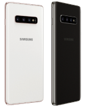
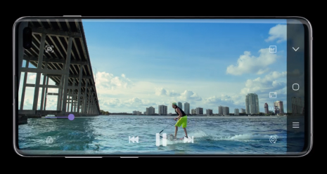
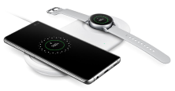

Абсолютно новый Infinity-O экран — на передней стороне смартфона нет ничего, кроме огромного
экрана и фронтальной камеры.

Для любителей роскоши, модель S10+ будет выпускаться в керамическом корпусе черного и белого
цветов.
Смартфоны доступны в 4х стильных цветах: Перламутр, Аквамарин, Оникс и Цитрус (для S10e).
В моделях S10 и S10+ установлены защитные стекла нового поколения – Gorilla Glass 6.
Сканер отпечатка в экране
Съемка видео

Отличное качество съемки новых поколениесмартфонов Samsung позволит создать и смотреть
праздники, семейные торжества и памятные моменты на огромном экране, с яркими, живыми
цветами и прекрасной детализацией.
Дополнительная система стабилизации сделает видеоролики плавными и красивыми.
Сверхзамедленная съемка (960 кадров в секунду) теперь в 2 раза дольше. Камера в S10 способна
распознать самое стремительное движение, такое как языки пламени, брызги воды, дым из под
колес спорткара.
Аксессуары
Для любителей роскоши, модель S10+ будет выпускаться в
керамическом корпусе черного и белого цветов.
Обширный ассортимент чехлов лля каждой модели. Цветовая
гамма, отличное качество, премиальные материалы и дополнительные возможности призваны
удовлетворить даже самый притязательный вкус.

Для любителей роскоши, модель S10+ будет выпускаться в
керамическом корпусе черного и белого цветов.
Обширный ассортимент чехлов лля каждой модели. Цветовая
гамма, отличное качество, премиальные материалы и дополнительные возможности призваны
удовлетворить даже самый притязательный вкус.
Беспроводная зарядная станция Duo Pad быстро заряжает
одновременно два устройства, одно из которых охлаждается.
Galaxy S10+ в режиме Dex поддерживает широкоформатные
мониторы. Мощный смартфон превращается в мощный десктоп.
Galaxy S10+ в режиме Dex поддерживает широкоформатные
мониторы. Мощный смартфон превращается в мощный десктоп.
Смартфон S10 сразу укомплектован защитной пленкой.
Приложения и сервисы Samsung
Благодаря приложению Smart Switch можно перенести информацию со старого смартфона на новый.
Приложение Samsung Health помогает контролировать физическую активность и вести дневник
питания.
Интеллектуальный помощник Bixby обеспечит быстрый доступ к переводчику, поиску в Интернете,
покупкам и многому другому.
Приложение Samsung Pay дает возможность оплачивать свои покупки при помощи смартфона.
Благодаря приложению Smart Things можно управлять всеми смарт-устройствами дома.